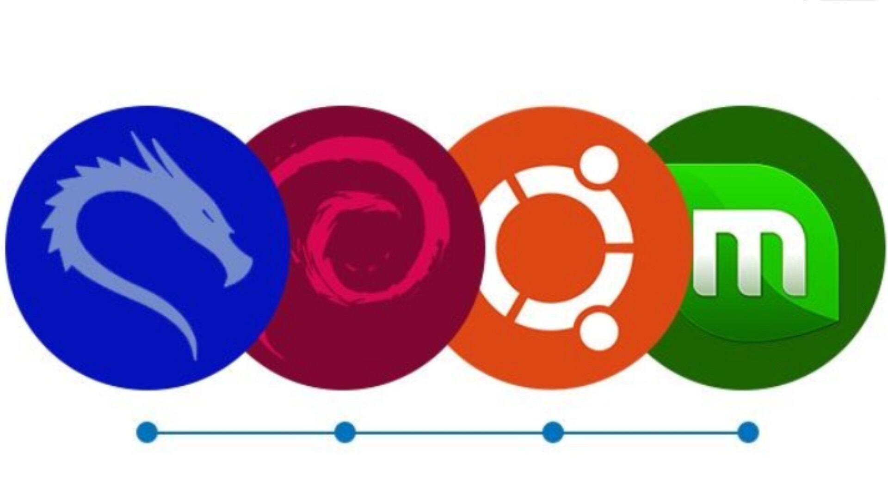

Bienvenidos a mi proyecto "APRENDIENDO CON INFORMUX" donde tratare de subir contenido informatico o de ayuda para haci aprendan ustedes y yo tambien.
Estoy empezando con la creacion de html,por ahora mi pagina esta en desarollo.

La mayoria de videos van a ser grabados en android con termux o puede ser en kali linux tambien pueden comentar que mas distrubuiciones de linux les gustaria que utilizara,siempre con el fin de utlizar el todo el potencial de nuestro android.
Aun sin los veneficios de una pc no es pretexto para no seguir aprendiendo,con algunas maquinas vituales ahora adaptadas para android podemos poner en practica nuestros conocimientos en informatica y seguir aprendiendo
